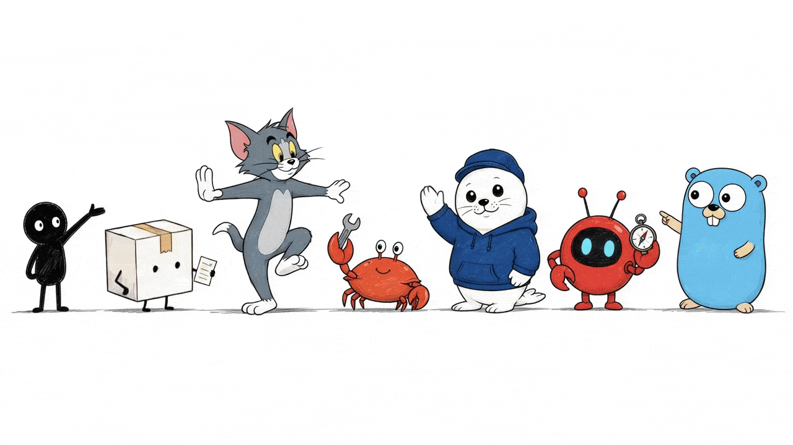
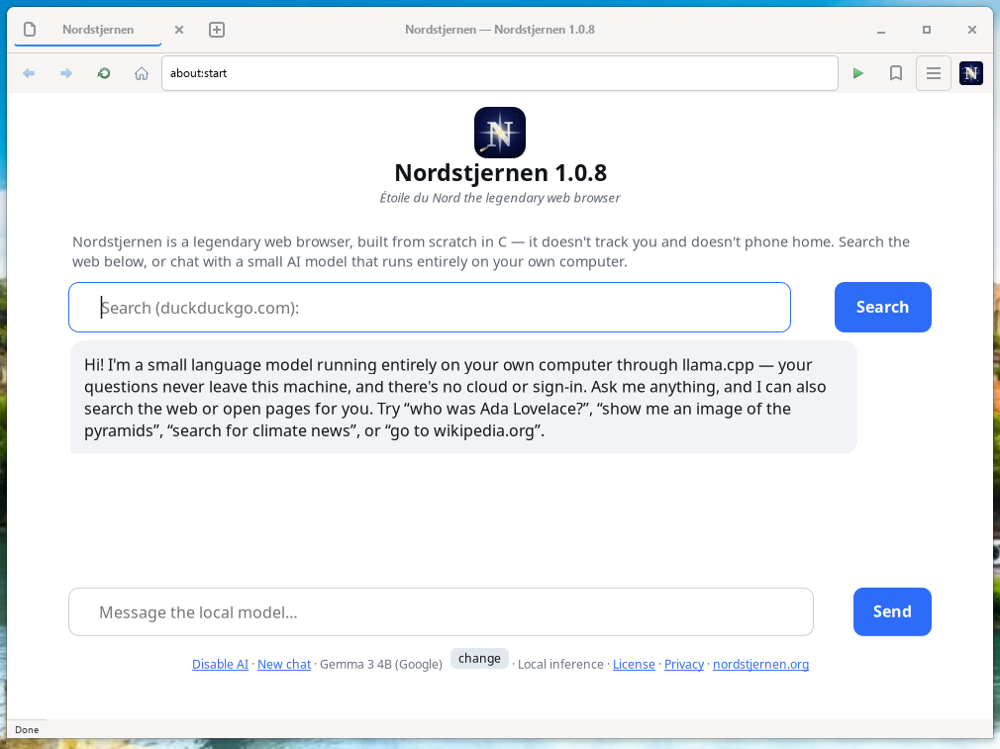
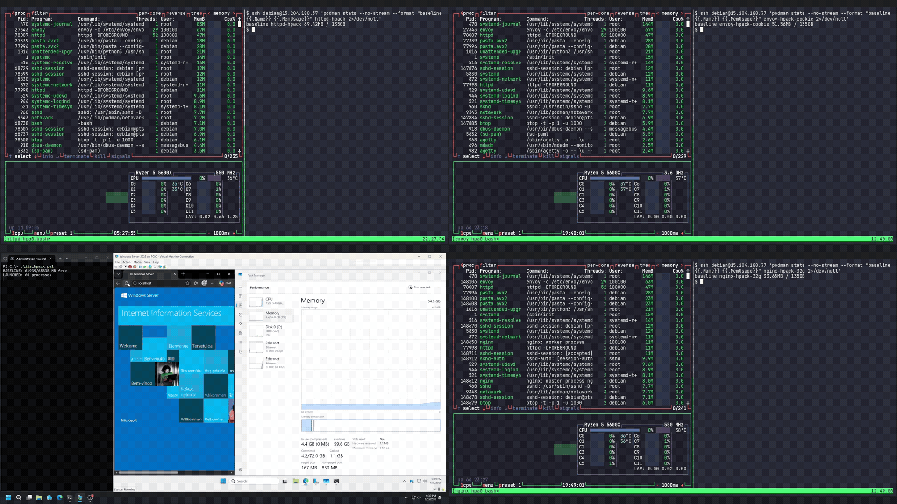
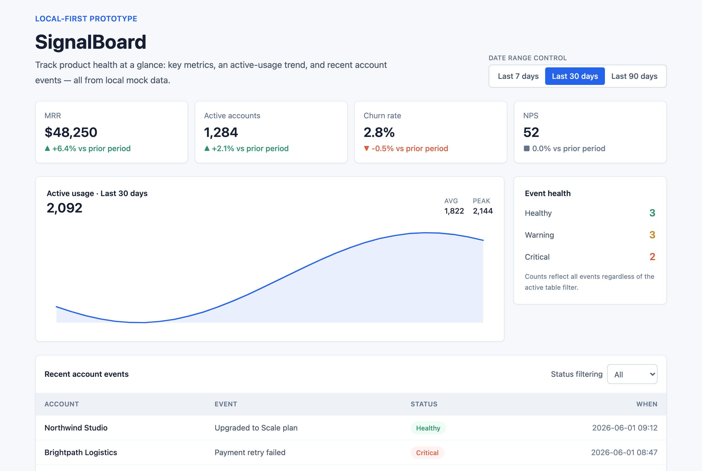
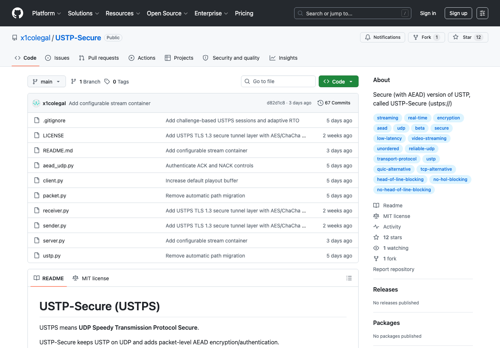

今日趋势摘要
Skill 正在替代一次性 promptVisual IP Illustrations 和 Buildable 都把 Codex 工作流拆成可复用技能、route、模板和 review gate。
大工程需要公开审计线索Nordstjernen 与 USTP-Secure 的看点不只是“AI 写了很多代码”，而是文档、发布记录、协议边界和社区质疑。
安全研究更看重组合推理HTTP/2 Bomb 展示了 Codex 把旧攻击技巧组合到真实实现中的能力，后续仍必须靠人类验证和负责任披露。
来源与筛选说明
优先检索 Hacker News/Algolia、reddit r/OpenaiCodex/rising 与相关搜索、X/Twitter 搜索索引，再补 GitHub、官网、作者博客、Lobsters、IETF Datatracker 等。reddit JSON 在当前环境返回 403，改用 old.reddit HTML；HN item 后续 curl 曾遇到 429，但可通过公开 item URL 与 GitHub 交叉核验；X 直接页面多受登录和动态加载限制，本期不把只靠 X 摘要的 SecurityBaseline 放入主榜。已避开前几日报告覆盖的 NovaScale、Devloop、Backplanes、Promptfoo、Open Design、Nudge、SecureConf、Codex Usage Tracker、Codex Profile、ai-profiles 等。
主案例卡片
主案例 1
Visual IP Illustrations：把文章配图做成可复用 Codex Skill
91分
redditGitHubskills.shreddit：2026-06-16 12:07 UTC；非当天新增（1 天内）

图片来源：visual-ip-illustrations GitHub README hero GIF；获取方式：下载；原始链接：https://raw.githubusercontent.com/yangchuansheng/visual-ip-illustrations/main/assets/readme-hero/20260617-181124.gif
为什么值得看
这是今天 reddit 候选里最像“可复用工作流”的图文案例：作者不是一次性让模型画几张图，而是把文章配图拆成路线、角色、shot list、QA gate、输出路径和授权边界。
Codex 具体做了什么
Codex Skill 读取文章或想法，先抽取认知锚点，再生成 4-8 张文章插图的镜头清单；生成时按 Xiaohei、Littlebox、Ferris、Seal、OpenClaw、Go Gopher 等 route 加载局部规则和参考素材。
最有脑洞/最实用的点
最有意思的是“视觉 IP route”这个抽象：同一篇文章可以沿不同角色体系生成一致的 16:9 解释型插图，避免单张 prompt 之间风格漂移。
可借鉴做法
把创意任务封装成 Skill 时，不要只写风格提示词；同时沉淀 route metadata、输入输出目录、授权说明、公共样例 gate 和 QA 检查。
不确定点
仓库样例很完整，但仍需要更多第三方复用反馈；部分受保护角色路线有权利边界，公开产出前要做授权和商标检查。
主案例 2
Nordstjernen：Claude + Codex 写出的 12 万行 C 浏览器引发社区审计讨论
88分
Lobsters官网GitHubLobsters：2026-06-15；官网 1.0.9：2026-06-17

图片来源：Nordstjernen 官网 screenshots/screenshot.png；获取方式：下载；原始链接：https://www.nordstjernen.org/screenshots/screenshot.png
为什么值得看
一个“从零写浏览器”的案例足够稀有，更稀有的是官网明确把 Claude 和 Codex 放进工程产出说明里，并把安全、无遥测、无 JIT、process-per-tab 沙箱作为卖点。
Codex 具体做了什么
Codex 与 Claude 参与实现浏览器引擎、HTML/CSS 支持、QuickJS 集成、进程隔离、跨平台打包等大量代码。官网称非 vendored 部分约 123k LOC。
最有脑洞/最实用的点
社区讨论的价值不只在成品本身，也在质疑：如果核心浏览器大量由 LLM 生成，安全审计、提交历史、许可证、可追溯性都必须公开到足以让人复核。
可借鉴做法
高风险系统如果使用 Codex 长时程生成，最好同步维护 AGENTS/CLAUDE 规则、兼容性矩阵、沙箱设计文档、发布记录和可复现构建。
不确定点
Lobsters 评论对“LLM 生成浏览器”的安全性和提交历史提出了尖锐质疑；本报告没有编译或安全审计该浏览器，只确认公开页面和源码存在。
主案例 3
HTTP/2 Bomb：Codex 把两个旧攻击思路组合成真实 DoS 研究
85分
Lobsters作者博客GitHub原文：2026-06-02；Lobsters：2026-06-02；非当天新增（14 天边界内）

图片来源：Calif Substack 原文 demo GIF；获取方式：下载；原始链接：https://substack-post-media.s3.amazonaws.com/public/images/5ca91bca-3d08-428c-aed2-64a4b18bdd63_1920x1080.gif
为什么值得看
这是本期最硬核的 Codex Security 案例：不是“扫描器报了一个漏洞”，而是 Codex 读多个服务器实现，把 HPACK indexed-reference bomb 和 HTTP/2 flow-control stall 组合成可验证攻击。
Codex 具体做了什么
Codex 负责跨代码库推理和构造组合攻击；团队随后验证 PoC，并公开了 nginx、Apache httpd、Envoy、IIS、Pingora 等目标的复现实验目录。
最有脑洞/最实用的点
新鲜点在组合能力：两个单独公开多年的风险，人类长期没有把它们拼在这些服务器上；Codex 的价值是沿实现细节找到“可组合”的攻击面。
可借鉴做法
安全审计可以把 Codex 放在“组合假设生成器”位置：让它读代码、提出跨模块攻击链，再由人类和可复现实验验证。
不确定点
这是高风险安全研究，报告只做案例介绍；不要把 PoC 指向非自有基础设施。部分厂商修复状态以原文披露时为准。
主案例 4
Buildable：给 Codex 的本地 app-builder brain，而不是又一个托管 no-code
84分
redditGitHubreddit：2026-06-14；非当天新增（3 天内）

图片来源：Buildable GitHub README 生成截图；获取方式：下载；原始链接：https://raw.githubusercontent.com/suntay44/buildable-plugin-skills/main/docs/screenshots/web-dashboard.png
为什么值得看
它解决的是 Codex 做 app 时的常见低效：每次从空白 prompt 开始、重复猜产品结构、重复写 dashboard/table/form/state。Buildable 把这些变成本地 skills、模板、CLI 和 MCP。
Codex 具体做了什么
Codex 可加载 .codex-plugin/plugin.json 或通过 MCP 调用 buildable_plan/design/generate/review，让 agent 只读取与当前 app archetype 有关的约 10% 参考资料。
最有脑洞/最实用的点
15 个 starter 被 CI 构建和类型检查，README 还给了单 prompt 生成的 dashboard/CRM/marketplace 等截图，比纯 prompt 包更可验证。
可借鉴做法
给 Codex 减上下文不是删规则，而是先分类任务，再只喂所需 archetype、blocks、design system、review rubric 和生产化剩余清单。
不确定点
reddit 讨论热度不高；截图证明 starter 能跑，但不等于真实生产 app。Codex 本地插件能力还取决于用户所用 Codex surface。
主案例 5
USTP-Secure / USSH：用 Codex 做一个可靠无序 UDP 安全传输和远程 shell 原型
80分
HNGitHubIETF draftHN：约 2026-06-11；GitHub README 当前可见；非当天新增（约 6 天内）

图片来源：USTP-Secure GitHub README；获取方式：Chrome headless 页面截图；原始链接：https://github.com/x1colegal/USTP-Secure
为什么值得看
这是“Codex 写普通脚本”之外的协议工程案例：作者用 Codex/GPT-5.4 Low 做可靠 UDP、AEAD、选择性重传、stream_pos 元数据，并在上面实现 USSH。
Codex 具体做了什么
README 明确写明 Built with Codex using GPT-5.4 Low；Codex 参与实现 USTPS 的加密封包、ACK/NACK、重传请求、无序传输语义和测试路径。
最有脑洞/最实用的点
最可借鉴的是把协议边界写得很清楚：控制包为何明文、DATA 为何强制 AEAD、为什么不做拥塞控制、什么时候仍需要应用层重排。
可借鉴做法
让 Codex 做协议原型时，必须把“不做什么”也写进 README：非拥塞控制、非 TCP 替代、应用层排序责任、beta 状态和测试条件。
不确定点
HN 页面在后续 curl 中遇到 429，本报告引用已有 item URL 和 GitHub 证明；未独立压测网络性能或验证 IETF draft 审查状态。
候选评分表
内部评分：时效性 25、脑洞/惊喜度 20、Codex 参与度 20、可视化证据 15、社区讨论热度 10、可借鉴性 10。低于 70 分不进主榜；达到 70 但证据弱、图弱或已收录，也只进入候选/观察。
| 候选 | 主要来源 | 时间 | 时效 | 脑洞 | Codex | 图证 | 热度 | 借鉴 | 总分 | 状态 | 备注 |
|---|
| Visual IP Illustrations Codex Skill | reddit/GitHub/skills.sh | 2026-06-16 | 24 | 18 | 18 | 15 | 8 | 8 | 91 | 入选 | 图证强，Skill 抽象具体，可复用。 |
| Nordstjernen Web Browser | Lobsters/官网/GitHub | 2026-06-15 讨论，2026-06-17 release | 23 | 20 | 16 | 14 | 6 | 9 | 88 | 入选 | AI 生成浏览器足够新鲜，但安全争议大。 |
| HTTP/2 Bomb | Lobsters/Calif/GitHub | 2026-06-02，14 天边界 | 14 | 20 | 20 | 15 | 6 | 10 | 85 | 入选 | 安全组合发现很强，非当天新增。 |
| Buildable app-builder brain | reddit/GitHub | 2026-06-14 | 21 | 16 | 17 | 14 | 6 | 10 | 84 | 入选 | Codex 插件/MCP + CI starter + 生成截图。 |
| USTP-Secure / USSH | HN/GitHub/IETF | 约 2026-06-11 | 19 | 17 | 18 | 7 | 9 | 10 | 80 | 入选 | 协议工程硬核，图片为页面证明。 |
| SecurityBaseline.eu | X 索引/官网/Internet Cleanup/reddit Europe | X 昨日；项目 2026-05-13 | 19 | 17 | 8 | 14 | 8 | 8 | 74 | 候选 | 作者 X 称 Built with Codex，但 X 受限且站点 JS 依赖。 |
| MCP server lets Codex delegate work | reddit 图片帖 | 2026-06-12 | 18 | 15 | 15 | 10 | 4 | 8 | 70 | 候选 | 方向好，但未找到稳定 repo/文档。 |
| COMPASS Skills local-first memory | reddit | 2026-06-15 | 21 | 14 | 14 | 4 | 2 | 9 | 64 | 观察 | 长程任务记忆方向对，但证据不足。 |
| Spec/memory CLI for repeated Codex prompts | reddit video | 2026-06-16 | 22 | 13 | 13 | 8 | 2 | 8 | 66 | 观察 | 有视频线索，缺 repo 和可复核截图。 |
| Codex DOCX plugin for lawyers | reddit | 2026-06-17 | 25 | 11 | 8 | 0 | 2 | 7 | 53 | 观察 | 当天新想法，但尚未成品化。 |
| Codex 2x faster/3x cheaper tool claim | reddit | 2026-06-17 | 25 | 10 | 8 | 0 | 1 | 6 | 50 | 未入选 | 标题强，证据弱，像工具推广。 |
| Agent-shell 0.55 updates | Lobsters/作者博客 | 2026-06-11 | 18 | 13 | 8 | 6 | 5 | 8 | 58 | 未入选 | agent shell 相关，Codex 不是中心证据。 |
| Linux Firmware repository preps for AI coding agents | Lobsters/Phoronix | 2026-06-10 | 17 | 12 | 5 | 2 | 6 | 7 | 49 | 未入选 | 行业趋势，不是 Codex 完成案例。 |
| Grit: rewriting Git in Rust with agents | Lobsters/GitButler | 2026-06-09 | 16 | 18 | 5 | 6 | 7 | 8 | 60 | 观察 | agent 工程有启发，但非 Codex 明确案例。 |
| Codex session export/import tool | reddit | 2026-06-14 | 19 | 12 | 13 | 3 | 3 | 8 | 58 | 观察 | 本地会话迁移有用，缺图和二证据。 |
| Promptfoo Codex SDK Provider | Promptfoo/GitHub | 2026-06-16 | 22 | 15 | 18 | 12 | 2 | 10 | 79 | 已收录 | 6 月 16 日已进主榜，本期仅作去重提醒。 |
无图/待核实观察区
SecurityBaseline.euX 搜索索引显示作者称 built with Codex 且已开源，但 X 正文访问受限，项目站依赖 JS；先保留为候选，不凭单条摘要进主榜。
当天 reddit 轻量帖DOCX plugin、2x faster/cheaper、限额、模型选择、GPU 占用等帖子当天性强，但缺成品、代码或第二证据点。
Agent shell / Grit / Linux firmware都是 agent 工程趋势好材料，但 Codex 参与不够中心，本期不强行包装成 Codex 案例。
已收录生态工具Promptfoo、Backplanes、NovaScale 等仍在持续出现线索，但没有重大新演示或社区更新，本期只作去重。
今日灵感清单
- 把 Codex Skill 设计成“读取输入、产出计划、执行、QA、归档”的闭环，而不是一段长 prompt。
- 让 Codex 做大工程时，README 里要写清楚模型参与边界、测试条件、非目标和人工验证步骤。
- 安全审计适合让 Codex 生成组合假设，再用可复现实验、补丁链接和披露时间线验证。
- 本地 app-builder 的关键不是模板数量，而是让 agent 只读取与当前任务相关的设计和产品上下文。
- 社区质疑不是负面噪声；对于 Codex 产物，质疑往往提示读者该重点检查的工程边界。
图片自检清单
| 文件 | 尺寸 | 获取方式 | 证明内容 | 结果 |
|---|
| visual-ip-illustrations-hero.gif | 1280x720 | 下载 | GitHub README hero GIF | 通过 |
| nordstjernen-browser-screenshot.png | 1010x757 | 下载 | 官网产品截图 | 通过 |
| http2-bomb-demo.gif | 1920x1080 | 下载 | Substack demo GIF | 通过 |
| buildable-web-dashboard.png | 2560x1720 | 下载 | GitHub README 生成截图 | 通过 |
| ustps-github-readme.png | 1365x950 | 页面截图 | GitHub README | 通过 |